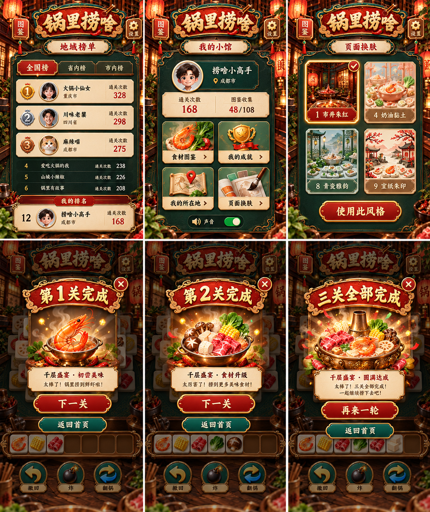
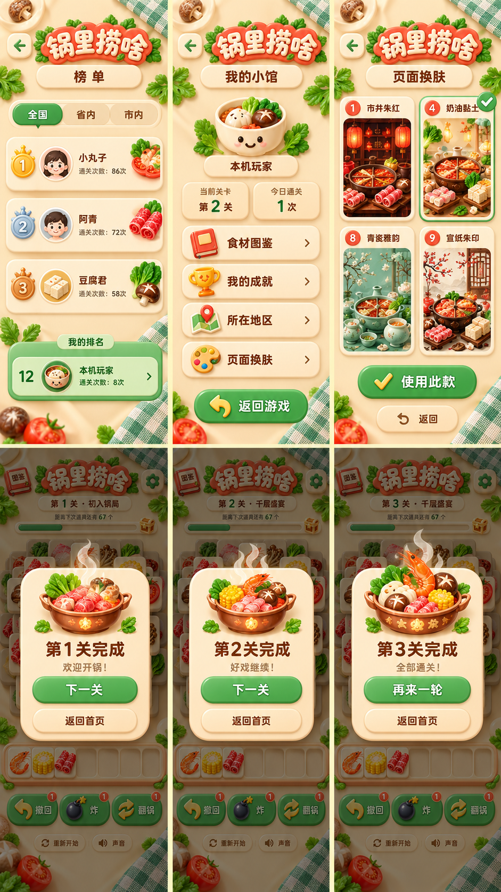
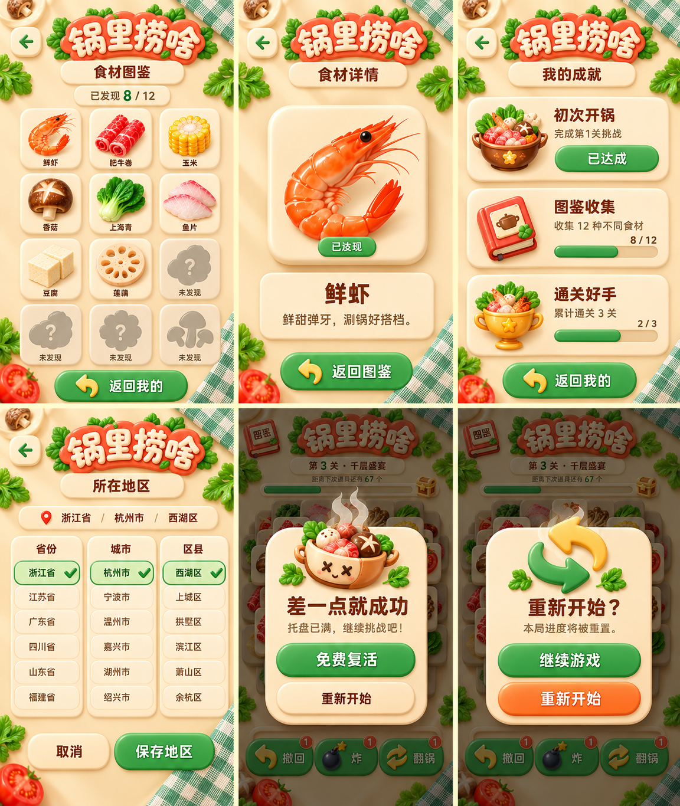
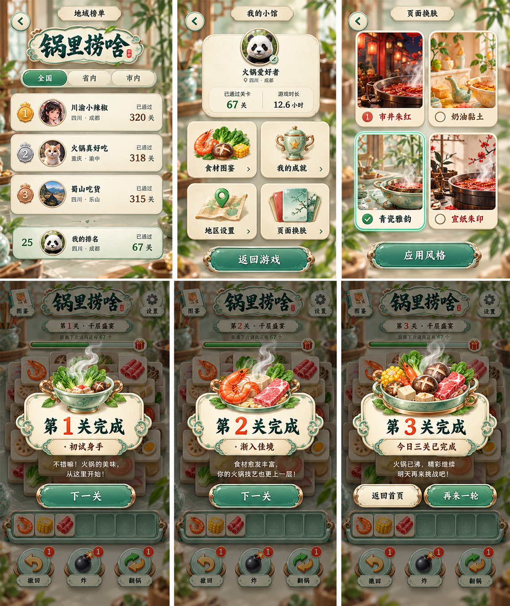
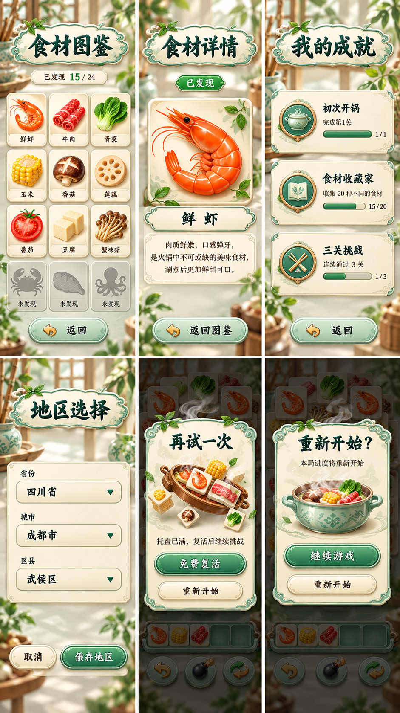
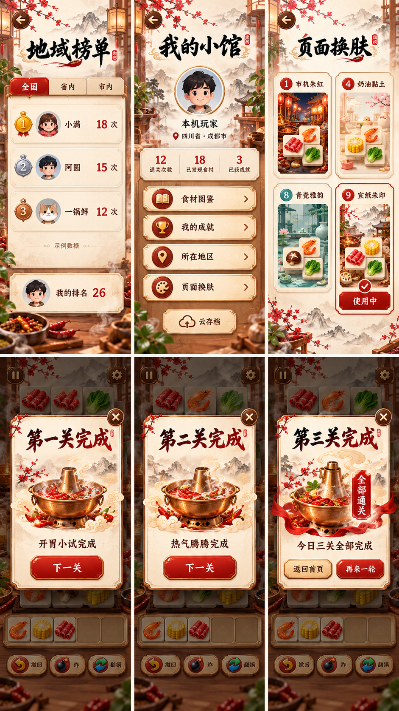

01. 1 市井朱红 · 榜单 / 我的 / 换肤 / 第一关完成 / 第二关完成 / 第三关全部完成
02. 4 奶油黏土 · 榜单 / 我的 / 换肤 / 第一关完成 / 第二关完成 / 第三关全部完成
03. 4 奶油黏土 · 食材图鉴 / 鲜虾详情 / 我的成就 / 所在地 / 失败复活 / 重新开始确认
04. 8 青瓷雅韵 · 榜单 / 我的 / 换肤 / 第一关完成 / 第二关完成 / 第三关全部完成
05. 8 青瓷雅韵 · 食材图鉴 / 鲜虾详情 / 我的成就 / 所在地 / 失败复活 / 重新开始确认
06. 9 宣纸朱印 · 榜单 / 我的 / 换肤 / 第一关完成 / 第二关完成 / 第三关全部完成